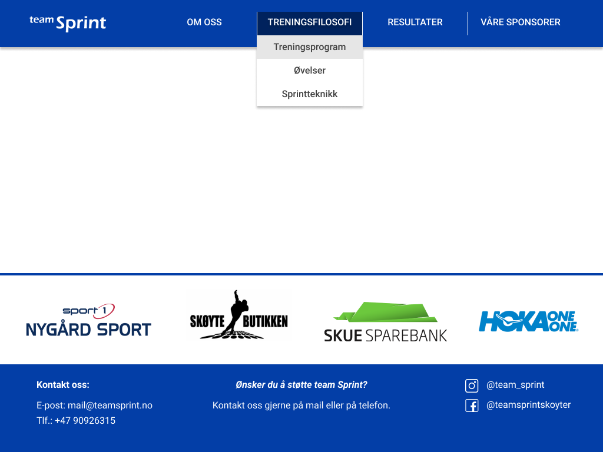
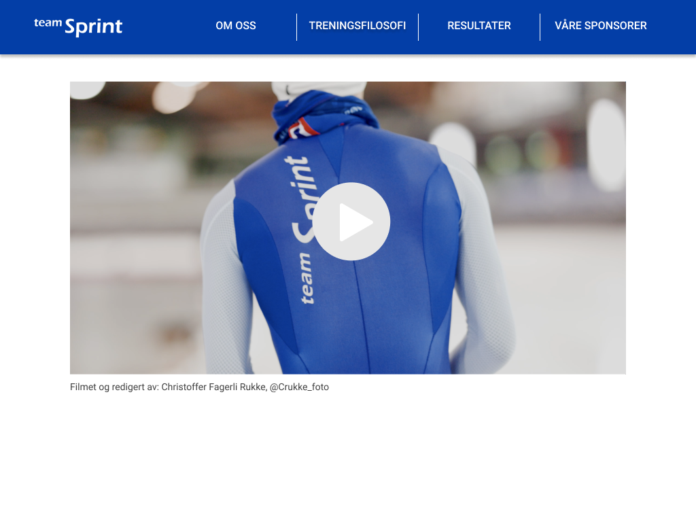
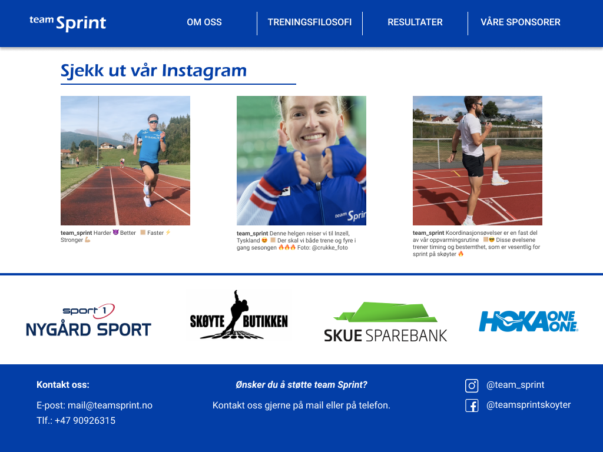
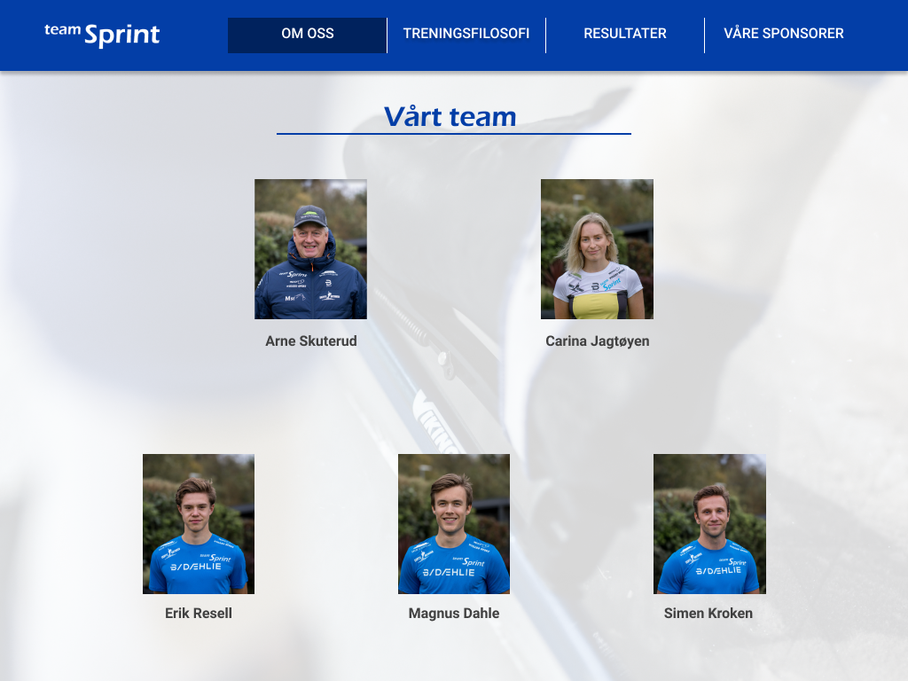
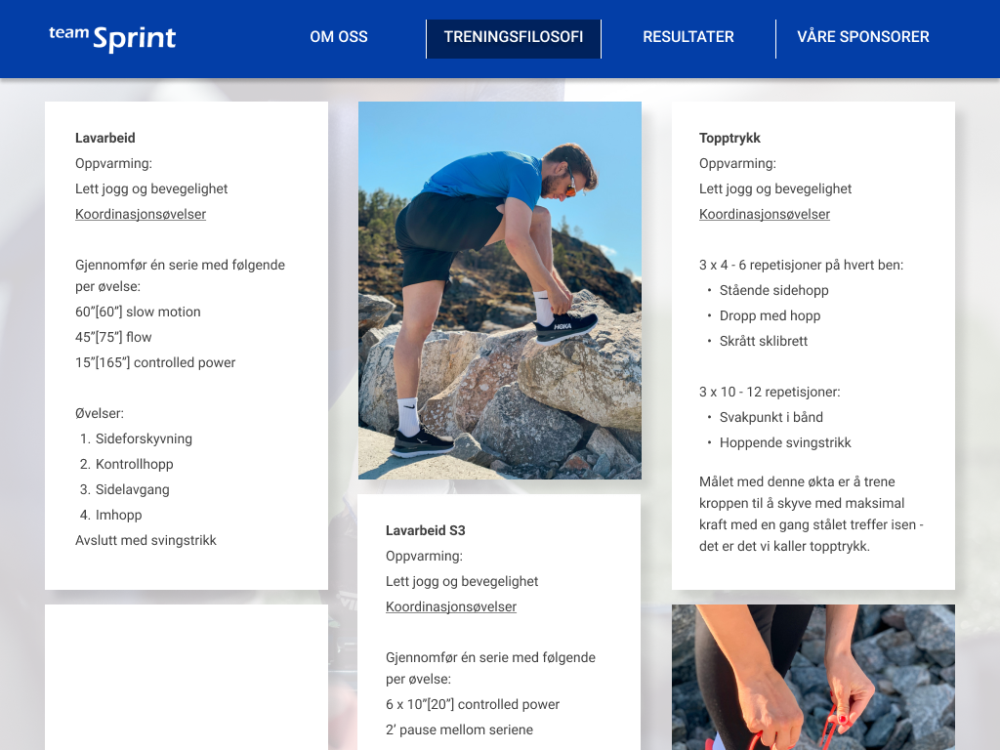
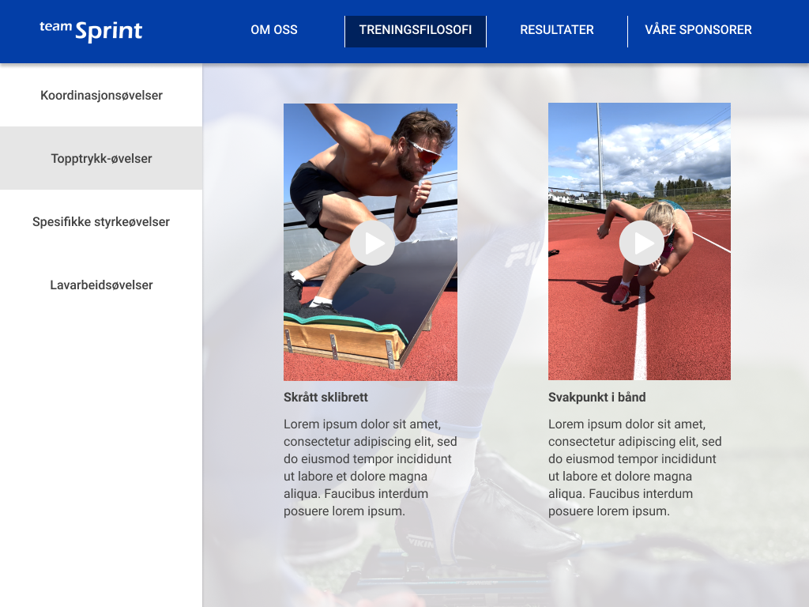
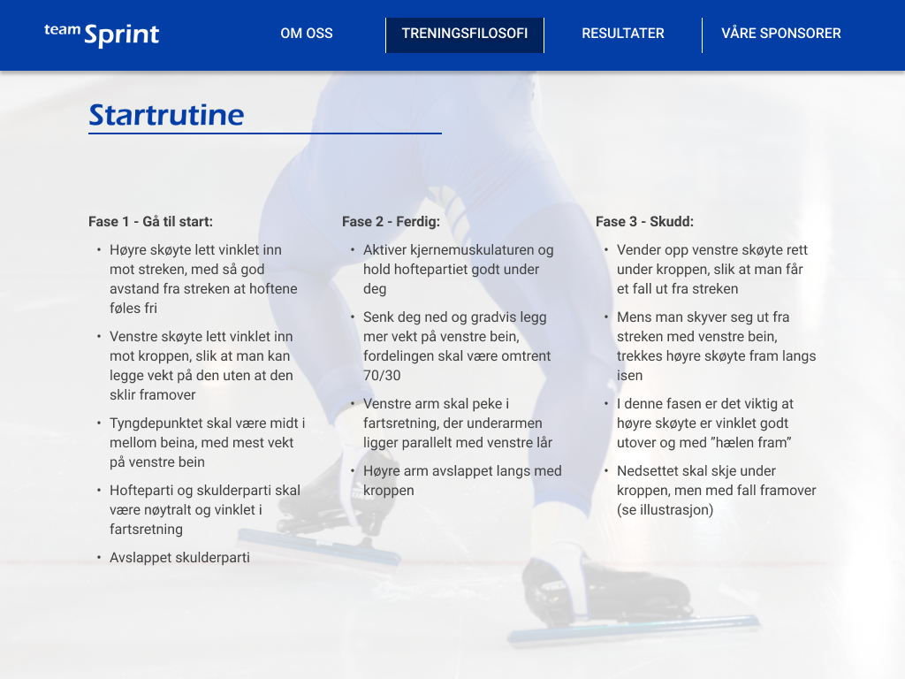
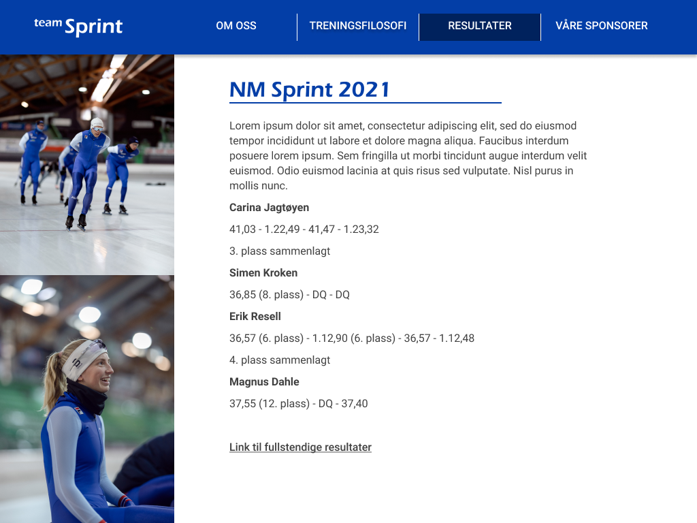

Administrative detaljer
- Klientens navn: Team Sprint
- Kontaktpersoner: Arne Skuterud (trener) & Carina Jagtøyen
Formål, hensikt og målgruppe
Norge har lange tradisjoner innen langdistanse på skøyter. Derfor ønsker Team Sprint å øke kunnskap om, og inspirere norske trenere og unge skøyteløpere til å spesialisere seg innen sprint. Dette vil være hovedhensikten med nettsiden. Hovedmålet med nettsiden er å lage en plattform der Team Sprint kan dele deres kunnskap om sprinttrening. Dette vil oppnås ved å publisere treningsprogram, øvelser, og tanker om sprintteknikk. Brukeren skal ha mulighet til å se videoer der øvelsene i treningsprogrammene blir introdusert. Et annet mål med nettsiden er å presentere Team Sprints arbeid og mål, en kort introduksjon av hver deltager og trener, i tillegg til oppdateringer fra konkurranser og treningssamlinger. Et siste mål er å skape en plattform med informasjon for flere potensielle sponsorer, i tillegg til å promotere nåværende sponsorer. Dette vil gjøres gjennom å vise frem bilder og videoer som viser sponsorprodukter og logoer. I tillegg vil det være en kort beskrivelse av hver sponsor, i tillegg til Team Sprints kontaktinformasjon.
Navigasjons struktur
Filstrukturen er en blanding mellom hierakisk og lineær. Hovedsiden, index.html er hjemmesiden du vil føres til når en går inn på siden. Herfra vil du kunne få tilgang til alle siden gjennom navbaren. Du vil alltid kunne gå tilbake til hjemmesiden gjennom å trykke på logoen i headeren, slik som på mange andre nettsider. Du vil alltid også ha tilgang til alle andre sider gjennom navbaren øverst på siden, som alltid er synlig.

Figur 1: Illustrasjon av hvordan siden skal forstås av bruker
Sidelayout og utseende
I arbeidet med å skape et universelt design for nettstedet, har vi fokusert spesielt på målet om å inspirere og øke kunnskapen til norske trenere og utøvere om sprint på skøyter. Designet spiller en viktig rolle i å gi brukerne et godt førsteinntrykk og en god brukeropplevelse, og med tanke på at nettstedet skal kunne brukes som et verktøy for trenere og utøvere, har vi endt opp med et enkelt design som gjør det lett å finne fram til de sidene man leter etter.
Navigasjons-baren som er festet øverst på hver side, gjør det mulig å klikke seg inn på alle sidene i nettstedet, uavhengig av hvilken side man befinner seg på. Kategorien "Treningsfilosofi" med de tre underkategoriene "Treningsprogram", "Øvelser" og "Sprintteknikk", vil tilfredsstille behovet om inspirasjon til øvelser og hjelp til tekniske detaljer for målgruppen som består av trenere og utøvere. Kategoriene "Om oss" og "Resultater" vil være nyttige for de brukerne som er interesserte i å bli bedre kjent med og følge utviklingen til utøverne i Team Sprint. Nederst på hver side finner man logoene til Team Sprints sponsorer, kontaktinformasjonen til Team Sprint, samt linker til deres Facebook- og Instagram-konto. Dette sammen med siden "Våre sponsorer" vil være tilfredsstillende for deres nåværende sponsorer, samt gjøre Team Sprint mer attraktive for potensielle sponsorer.
Team Sprint ønsker at det universelle designet skal være enkelt, men gjenkjennbart og helhetlig. På bakgrunn av disse ønskene har vi valgt å ta utgangspunkt i logoen til Team Sprint når det kommer til fargevalg og fonter, samt bruke bilder av skøyter som bakgrunn på noen utvalgte sider.
Figur 2: Mockup av sidens layout
Følgende spesifikke krav til design skal gjelde for alle sidene i nettstedet:
- Fonter: "Eras Demi ITC", slik som Team Sprints logo, for de større overskriftene i nettstedet (32 pt), og "Arial" for alt av tekst i body (16 pt) og footer (14 pt). "Roboto" skal brukes i navigasjons-baren og i menyene (18 pt).
- Fargeskjema:
- Tekst: Blå (#033EA7) på større overskrifter, hvit (#FFFFFF) i nav-bar og i footer, og mørk brun (#414141) på alt av tekst i body, dropdown-meny og vertikal tab-meny.
- Banner og footer: Blå (#033EA7)
- Bakgrunn: Hvit (#FFFFFF)
- Dropdown-meny og vertikal tab-meny: Hvit (#FFFFFF) bakgrunn, som skifter til lys grå (#E6E6E6) når man holder musen over en bestemt tab.
- Skygger: Navigasjons-baren og dropdown-menyen skal ha en drop skygge på nederste linje (bottom).
- Bakgrunnsbilder: På sidene "Om oss", "Treningsprogram", "Øvelser" og "Sprintteknikk" skal den hvite bakgrunnen byttes ut med tre henholdsvis ulike bilder av skøyter. Disse bildene skal ha 18% ugjennomsiktighet (opacity), slik at de ikke stjeler for mye fokus fra innholdet på sidene.
- Linker: Team Sprint-logoen i banneret vil være en klikkbar link som tar brukeren tilbake til hjem-siden. Navigasjons-baren, inkludert dropdown-menyen, inneholder linker til de respektive sidene i nettstedet. Sponsorlogoene nederst på hver side vil være klikkbare linker til hjemmesidene til de respektive sponsorene (disse åpnes i nye faner). Noen utvalgte øvelser i treningsprogrammene vil være linket til tilhørende videoer i siden "Øvelser", dermed skal "Øvelser" åpnes i en ny fane når brukeren klikker på navnet til den aktuelle øvelsen i treningsprogrammet.
- Navigasjons-bar: Navigasjons-baren vil være inkludert i banneret øverst på hver side. Når man holder musen over en bestemt tab skal den blå bakgrunnen skifte til en mørkere blåfarge (#00225E). Denne mørke blåfargen skal også være bakgrunnen til den aktive siden.
- Banner: Banneret vil bestå av en blå bakgrunn (#033EA7) med Team Sprint sin hvite logo (#FFFFFF) plassert helt til venstre, slik som vist øverst på mockup-bildet, og navigasjons-baren til høyre for logoen.
- Footer: E-post: mail@teamsprint.no og tlf.: +47 90926315. Instagramkonto: @team_sprint og Facebookkonto: @teamsprintskoyter.
Innhold
Nettstedet vil bestå av de følgende syv separate sidene:
- Hjem - index.html
Hjem-siden vil være det første brukerne møter når de besøker nettsiden til Team Sprint, det er derfor viktig at denne siden fanger interessen til besøkende. Dette skal vi oppnå ved å unngå å overfylle siden med informasjon, men heller skape et blikkfang. Førsteinntrykket av hjem-siden skal være at den er ryddig, gjenkjennbar og spennende.
Denne siden vil derfor hovedsaklig inneholde en promovideo av Team Sprint, som skal gi besøkende et inntrykk av hva skøytelaget driver med. Videoen skal være midtstilt og dekke 80% av bredden til skjermen den vises på. Videoen skal spilles av automatisk, men uten lyd, når besøkende kommer inn på siden.
Under promovideoen kommer en seksjon med overskriften "Sjekk ut vår Instagram" og tre innebygde Instagram-innlegg hentet fra lagets Instagram-bruker. Innleggene skal ha en bredde på 250px, og mellomrommet skal være det samme mellom hvert innlegg. Overskriften skal være justert mot venstre og plassert 10% av skjermens bredde fra venstre kant, i likhet med promovideoen. En horisontal linje skiller overskriften fra Instagram-innleggene under.
På denne måten vil hjem-siden bidra til å nå målet om å inspirere trenere og utøvere til å ville utforske sprint på skøyter. Ved å holde innholdet til et minimum og spille av en video som utstråler idrettsglede, fart og spenning, vil vi kunne friste besøkende til å sjekke ut de andre sidene som ligger i navigasjons-baren. Instagram-innleggene vil være en fin måte å holde skøyteentusiaster oppdaterte på hva Team Sprint driver med for tiden.
Figur 3: Mockup for hjem-siden (øvre del)
Figur 4: Mockup for hjem-siden (nedre del)
- Om oss - about.html
Dette vil være siden som introduserer Team Sprint og hver enkelt utøver (og trener). Siden har et festet bakgrunnsbilde med 18% opacity, og alt av innhold ligger oppå og kan scrolles over dette bakgrunnsbildet.
Siden starter med overskriften "Team Sprint", etterfulgt av en kort introduksjon av laget, deres arbeid og målsettinger. Overskriften og teksten skal være midtstilt på siden, der teksten er justert mot venstre. Det vil også være en horisontal linje under overskriften som skiller teksten og overskriften.
Under introduksjonen av laget kommer introduksjonen av treneren og utøverne. Overskriften er "Vårt Team" etterfulgt av en horisontal linje som skiller overskriften og innholdet. Deretter følger et portrettbilde av hver utøver med tilhørende navn under. På første linje vil det være to portretter, og på andre linje vil det være tre portretter. Portrettene skal ha en bredde på 200px og være midtstilt på siden, med passende mellomrom mellom hvert bilde. Navnene skal midtstilles under hvert bilde.
Når den besøkende klikker på et av portsettbilene eller navnene skal det åpnes et pop-up-vindu med informasjon om utøverene. I vinduet som åpnes vil navnet på utøveren/trener være overskriften, etterfulgt av det samme portrettbildet, men litt større dimensjon på bildet (bredde:500px). I tillegg til bildet vil det være en liten tekst om utøveren, med tilhørende SoMe-informasjon. Nederst i pop-up-vinduet ligger en liste med utøverens personlige rekorder. Dette vil være likt for alle utøverne. Pop-up-vinduet har hvit bagrunn, der resten av siden vil bli mørk med en opacity på 0.7, slik at vinduet står i fokus.
Denne siden bidrar til å nå målet om å inspirere trenere og yngre skøyteløpere ved at de får bli bedre kjent med utøverne som står bak nettsiden. Å lese litt om Team Sprint-utøvernes bakgrunn kan hjelpe yngre skøyteløpere til å identifisere seg med deres målsettinger og prestasjoner, og dermed virke som en motivasjonsfaktor.
Figur 5: Mockup for Om oss
- Treningsprogram - trainingprogram.html
På denne siden finner man ulike treningsøkter som Team Sprint bruker aktivt i sin treningshverdag. Dette er økter som har som formål å styrke ferdigheter og egenskaper som er vesentlige for å gå fort på sprintdistanser på skøyter.
Siden har et festet bakgrunnsbilde med 18% opacity. Oppå dette bakgrunnsbildet ligger tre kolonner med hvite bokser, som kan scrolles opp og ned over bakgrunnsbildet. Kolonnene skal ha en bredde på 300px og høyde 600px, og mellomrommet skal være det samme mellom hver kolonne. De ulike treningsøktene skrives inn i hver sin hvite boks. Noen av de hvite boksene erstattes med utvalgte bilder fra Team Sprint for å gjøre siden litt mer levende. Bildene skal ha den samme bredden som kolonnene.
Treningsprogrammene spiller en svært viktig rolle i å oppfylle hovedmålet Team Sprint har med nettstedet, nemlig å dele deres kunnskap om sprinttrening. Denne siden gjør at flere utøvere kan trene slik som Team Sprint eller hente inspirasjon til øvelser som de kan implementere i sine egne treningsøkter.
Figur 6: Mockup for Treningsprogram
- Øvelser - exercises.html
"Øvelser"-siden vil i likhet med "Treningsprogram" bidra til å oppfylle målet om å videreføre kunnskap om sprinttrening til de som har et ønske om å lære mer og bli raskere på isen. En slik "øvelse"-bank kan være et fantastisk hjelpemiddel for trenere som ønsker å øke sin kompetanse på sprinttrening.
Siden har et festet bakgrunnsbilde med 18% opacity, og alt av innhold ligger oppå og kan scrolles over dette bakgrunnsbildet.
Siden inneholder videoer av ulike treningsøvelser som Team Sprint benytter i sine treningsøkter. For å gjøre det enkelt for de som benytter seg av siden å finne fram til de videoene de leter etter, har vi inkludert en vertikal tab-meny på venstre side, som har en bredde på 300px. Menyen inneholder ulike kategorier for øvelser, for eksempel koordinasjonsøvelser eller navnet på økter som ligger under "Treningsprogram".
Hver video har en bredde på 300px. Navnet på øvelsen som demonstreres på videoen, samt en kort beskrivelse, ligger under hver video. Navnet og teksten skal være justert mot venstre. Videoene ligger to og to på hver linje nedover, og skal ha det samme mellomrommet mellom seg, som de har til den vertikale menyen og høyre kant av skjermen.
Figur 7: Mockup for Øvelser
- Sprintteknikk - sprinttechnique.html
"Sprintteknikk"-siden inneholder en beskrivelse av Team Sprint sin filosofi når det gjelder teknisk utførelse av sprint på skøyter. Deres hovedfokus er startrutine, med andre ord hvordan man får en best mulig åpning. Denne siden vil, i likhet med "Treningsprogram" og "Øvelser", bidra til at flere kan lære av kunnskapen Team Sprint innehar når det gjelder sprint på skøyter.
Siden har et festet bakgrunnsbilde med 18% opacity, og alt av innhold ligger oppå og kan scrolles over dette bakgrunnsbildet. Øverst på siden står overskriften "Startrutine", etterfulgt av en horisontal linje, som skal være plassert 10% av skjermens bredde fra venstre side. Under denne linjen følger en tekst som er delt inn i tre spalter. Disse spaltene skal ha en bredde på 300px og teksten skal være justert mot venstre.
Figur 8: Mockup for Sprintteknikk
- Resultater - results.html
Denne siden skal inneholde oppdateringer og resultater fra konkurranser som utøverne i Team Sprint har deltatt i. Med andre ord er dette en side der Team Sprint kan publisere tider og plasseringer, samt korte beskrivelser av konkurransene. Dermed vil vi kunne nå målet om å holde familie, venner og andre interesserte oppdaterte på prestasjonene og utviklingen til Team Sprint-utøverne.
Til venstre på siden vil det være festet en kolonne med bilder, som har en bredde på 360px. Til høyre for bilde-seksjonen vil resultatoppdateringene være plassert med en venstre marg på 100px. Hver oppdatering vil starte med en overskrift, for eksempel navnet på konkurransen, etterfulgt av en horisontal linje og deretter innholdet. Både overskrift og innhold skal være justert mot venstre.
Figur 9: Mulig design av "resultat"-siden
- Våre sponsorer - sponsors.html
"Våre sponsorer" er en side hvor Team Sprint sine sponsorer presenteres med en kort beskrivelse av hver enkelt og forholdet deres til Team Sprint. Denne siden bidrar til målet om å bruke nettsiden som et middel i markedsføringen av sponsorene nås.
Siden deles inn i to kolonner som hver har en bredde på 450px og er midtstilt i forhold til skjermen. Hver kolonne inneholder presentasjonen av to sponsorer. Logoene til sponsorene brukes som overskrift, og en horisontal linje skiller logoene fra en kort beskrivelse av sponsorene og deres samarbeid med Team Sprint.

Figur 10: Mulig design av "sponsor"-siden
Minimumskrav
- Responsive navbar
En responsive navbar vil implementeres i headeren, i en meny. Det vil kalles på når brukeren trykker på treningsfilosofi. Da vil det, ved hjelp av javascript, poppe opp en dropdown-meny der brukeren vil kunne velge hvilken side den vil inn på
- Pop-up bilde m/tekst
En javascript som implementeres på portrettbildene og utøvernavnene i about.html. Når brukeren klikker på bildet skal det poppe opp et vindu midt på siden med informasjon om utøverene. Hver utøver har sitt eget pop-up-vindu tilhørende sitt bilde og navn. Øverst i høyre hjørne er et lite kryss, slik at den besøkende kan lukke pop-up-vinduet og gå tilbake til den opprinnelige about.html-siden.
- Hide content
Javascript der en vil kunne "hide" og "showe" treningsopplegg. I OmOss fila vil det være en sidemeny med fire forskjellige treningsopplegg med tilhørende treninger samt en påfølgende video til. Formålet med en HideContent funksjon vil være å kunne "toggle" mellom de fire oppleggene, da med javascript. I js fila vil det være fire funksjoner som hver vil kunne vise sine to opplegg.
- Header and footer
Hver side skal inneholde en header og footer, som vi linker opp ved bruk av JavaScript.
Plan
Organiseringsplan
Liste over filer og mapper:
- index.html
- about.html
- sprinttechnique.html
- trainingprogram.html
- execises.html
- results.html
- sponsors.html
- css/
- index.css
- about.css
- sprinttechnique.css
- trainingprogram.css
- exercises.css
- results.css
- sponsors.css
- js/
- pictures.js
- header.js
- footer.js
- navbar.js
- hidecontent.js
- img/
- portrait1
- portrait2
- portrait...
- background_img1
- background_img2
- background_img...
- video1...
Arbeidsfordeling og frister
| Filnavn | Beskrivelse | Ansvarlig | Frist |
|---|---|---|---|
| header.js | Javascript til header | Sara | 22/10/21 |
| footer.js | Javascript til footer | Sara | 22/10/21 |
| hidecontent.js | Javascript til visning av treningsøvelser | Sixten | 22/10/21 |
| index.html | Startsiden til Team Sprint | Petter | 15/10/21 |
| index.css | index.html stil | Petter | 15/10/21 |
| about.html | Om Team Sprint som lag | Ine | 18/10/21 |
| about.css | about.html stil | Ine | 18/10/21 |
| pictures.js | Sprettopp av utøvere sin presentasjon | Ine | 22/10/21 |
| exercises.html | Treningsøvelser av Team Sprint | Sixten | 18/10/21 |
| exercises.css | execises.html stil | Sixten | 18/10/21 |
| trainingprogram.html | Team Sprints treningsprogram | Carina | 18/10/21 |
| trainingprogram.css | trainingprogram.html stil | Carina | 18/10/21 |
| sprinttechnique.html | Sprintteknikker i skøyting av Team Sprint | Sara | 18/10/21 |
| sprinttechnique.html | sprinttechnique.html stil | Sara | 18/10/21 |
| results.html | Tidligere resultater for Team Sprint | Petter | 18/10/21 |
| results.css | results.html stil | Petter | 18/10/21 |
| sponsors.html | Team Sprints sponsorer presentasjon | Petter | 20/10/21 |
| sponsors.css | sponsors.html stil | Petter | 21/10/21 |
| Siste sjekk | Gå over før testing | Alle | 1/11/21 |